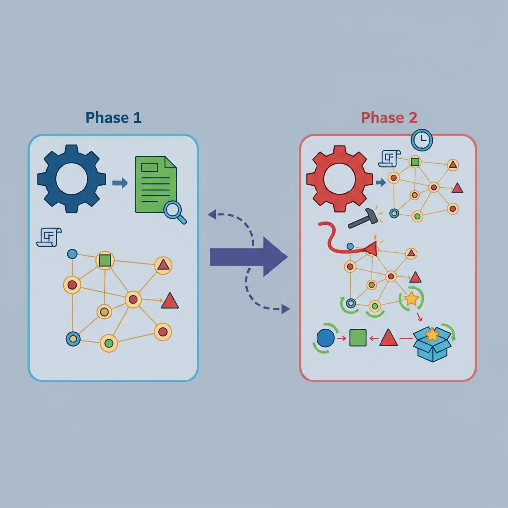
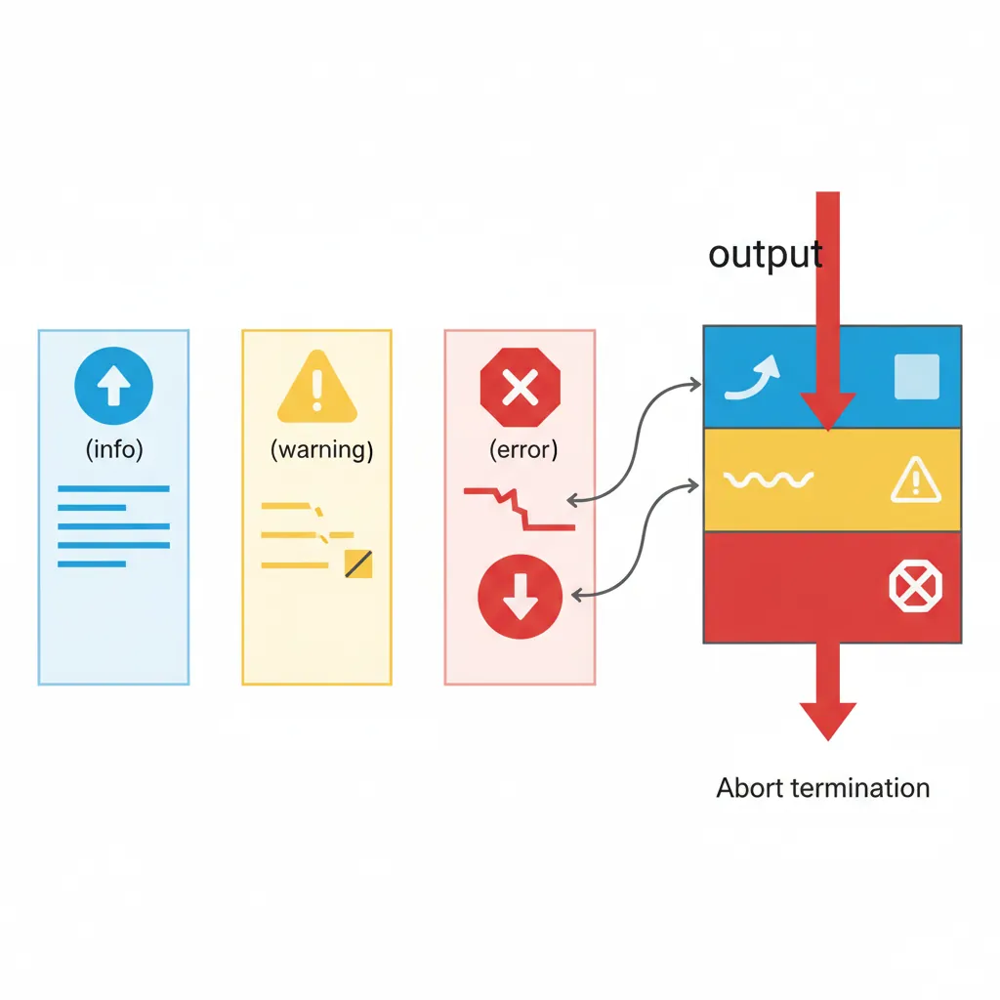
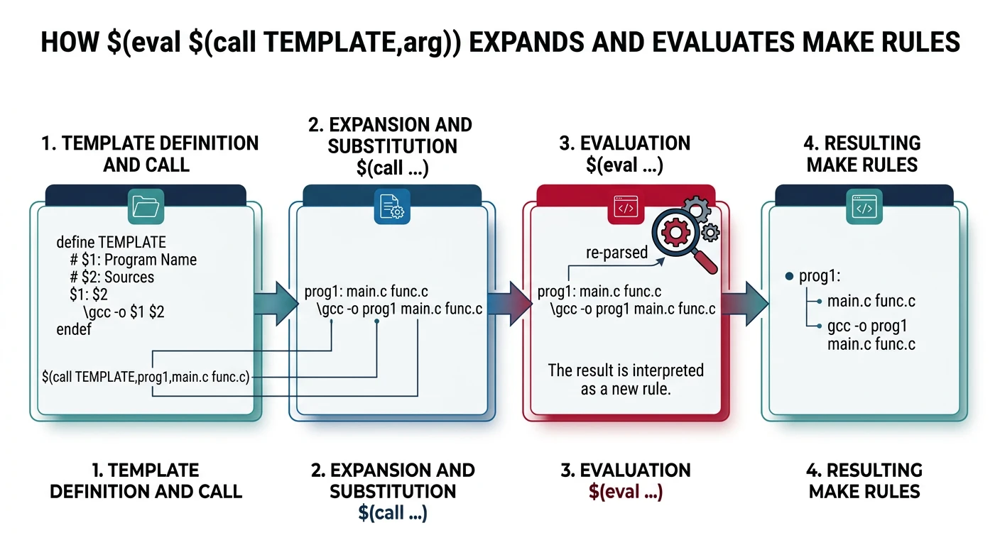

We use cookies to enhance your browsing experience, serve personalized content, and analyze our traffic. By clicking "Accept All", you consent to our use of cookies. See our Privacy Policy for more information.
GNU Make Mastery Part 15: Advanced Make & Debugging
February 26, 2026Wasil Zafar22 min read
Unlock GNU Make's full debugging toolkit: --debug verbosity levels, -p database dumps, $(warning) and $(error) tracing macros, dynamic rule generation with $(eval), $(call), and define, plus the subtle evaluation-order traps that trip up experienced users.
Part 15 of 16 — GNU Make Mastery Series. GNU Make is a declarative, two-phase language with lazy string expansion — a combination that makes bugs uniquely difficult to spot. This article gives you the full debugging arsenal: built-in flags, print tracing, dynamic rule generation, and a catalogue of the evaluation traps every Make veteran has fallen into at least once.
Every GNU Make invocation runs in two distinct phases:
Phase 1 — Read & Parse
Make reads all Makefiles, expands immediate (:=) variables, evaluates include directives, and builds the dependency graph. No recipes run during this phase.
Phase 2 — Execute
Make walks the dependency graph, checks timestamps, and runs shell recipe lines for out-of-date targets. Deferred (=) variables are expanded here, immediately before each recipe line executes.
Most confusing Makefile bugs are caused by misunderstanding which phase a particular expansion happens in. The debugging tools below reveal exactly what Make sees at each phase.

Make's two-phase execution: Phase 1 reads Makefiles and builds the dependency graph; Phase 2 walks the graph and fires recipes for out-of-date targets
Sample Source Files
Self-contained examples: Debugging examples run Make against a real project to show how --debug, $(warning), and --dry-run output maps to source. These two files produce the exact build graph described in the tracing walkthroughs.
/* utils.h */
#ifndef UTILS_H
#define UTILS_H
void utils_greet(const char *name);
int utils_add(int a, int b);
#endif
utils.c
/* utils.c */
#include <stdio.h>
#include "utils.h"
void utils_greet(const char *name) {
printf("Hello, %s!\n", name);
}
int utils_add(int a, int b) { return a + b; }
The --debug Flag
Pass --debug (or -d) to make Make print internal decisions to stderr. Without an argument it defaults to the basic level.
The --debug flag hierarchy: basic shows rebuild decisions, verbose adds implicit rule search, jobs traces parallel scheduling, and all combines everything
Verbosity Levels
Debug Levels Reference
Flag
What It Shows
--debug=b / --debug
basic — which targets are considered, why each is rebuilt
--debug=v
verbose — implicit rule search details
--debug=i
implicit — every implicit rule examined per target
--debug=j
jobs — parallel job fork/reap events
--debug=m
makefile — re-reading of Makefiles themselves
--debug=n
none — turns debug off (useful to override MAKEFLAGS)
--debug=a
all — everything; equivalent to combining all letters above
# Why is 'all' being rebuilt?
make --debug=b all 2>&1 | head -40
# Trace parallel job scheduling problems
make --debug=j -j4 2>&1 | grep -E 'Putting|Reaping|Live'
# Full diagnostic dump (pipe through less for large outputs)
make --debug=a 2>&1 | less
Reading Debug Output
A typical --debug=b line looks like:
Considering target file 'src/main.o'.
File 'src/main.o' does not exist.
File 'src/main.c' exists.
Must remake target 'src/main.o'.
Invoking recipe from Makefile:12 ...
Tip: Pipe make --debug=b 2>&1 | grep -E 'Considering|Must|up to date' to get a concise rebuild decision log without the noise of every prerequisite check.
The -p Database Dump
make -p (or --print-data-base) dumps the entirety of Make's internal state after reading all Makefiles — every variable, every rule (explicit and implicit), and their sources. It's the definitive answer to "what does Make actually see?"
The -p database dump reveals every variable's origin (default, environment, file, command line) and every rule Make knows about — the definitive internal state view
# Dump database without running any targets
make -p --dry-run 2>/dev/null | less
# Dump database for a specific target's context
make -p --dry-run all 2>/dev/null | less
# Search for a variable's value and origin
make -p --dry-run 2>/dev/null | grep -A3 '^CC'
Finding Variable Origins
Each variable entry in the database shows its origin (default, environment, file, command line, automatic):
# Typical output for CC:
# CC
# origin = default
# flavor = recursive
# value = cc
# After override via CLI:
# CC
# origin = command line
# flavor = recursive
# value = clang
This immediately reveals if an environment variable is silently overriding your Makefile declaration — one of the most frustrating bugs in CI/CD environments.
Knowing the built-in rule chain helps you decide whether to override it with a pattern rule or extend it via CFLAGS / COMPILE.c.
Using -p safely: Always combine with --dry-run (-n) so no recipes actually execute during the dump. The output can be several thousand lines; always pipe through less or grep.
Tracing with $(warning) & $(error)
Make provides three message-printing functions that expand during Phase 1 (parse time), making them invaluable for tracing variable values before any recipe runs:

The three trace functions: $(info) prints cleanly to stdout, $(warning) adds file:line context to stderr, and $(error) aborts Make immediately
Message Functions
Function
Behaviour
$(info text)
Prints text to stdout with no file/line annotation. Continues processing.
$(warning text)
Prints file:line: text to stderr. Continues processing.
$(error text)
Prints file:line: *** text. Stop. and immediately aborts Make.
Common Tracing Patterns
# 1. Inspect a variable at parse time
$(warning SRCS = $(SRCS))
# 2. Validate a required variable
ifndef CC
$(error CC is not set — aborting)
endif
# 3. Trace which branch of a conditional is taken
ifeq ($(DEBUG),1)
$(warning DEBUG mode ON)
CFLAGS += -g -O0
else
$(warning RELEASE mode)
CFLAGS += -O2
endif
# 4. Confirm an include file was found
$(warning Loading config.mk)
include config.mk
$(warning Loaded config.mk: VERSION=$(VERSION))
$(info) vs $(warning)
# Use $(info) for clean build-time messages that go to stdout
$(info Building version $(VERSION) for $(TARGET_ARCH))
# Use $(warning) when you want file:line context (easier to grep in CI logs)
$(warning CFLAGS after config.mk: $(CFLAGS))
# Remove all tracing before committing:
# grep -rn '$(warning' Makefile *.mk
Trace all variables at once: Add $(foreach v,$(.VARIABLES),$(info $v = $(value $v))) near the top of your Makefile to dump every variable and its un-expanded value — useful when the origin of a bad value is completely unclear.
Dynamic Rule Generation
One of Make's most powerful — and least understood — features is the ability to generate rules programmatically at parse time using $(eval), $(call), and define.

Dynamic rule generation: $(call) substitutes arguments into a template, $(eval) feeds the expanded text back to Make's parser, creating rules programmatically
$(eval) and $(call)
$(eval text) causes Make to parse text as if it appeared literally in the Makefile. $(call var,arg1,arg2,...) expands a variable as a function, substituting $(1), $(2), etc.
# Define a rule-generating template as a multi-line variable
define COMPILE_template
# Rule: build/$(1).o from src/$(1).c
build/$(1).o: src/$(1).c | build
$$(CC) $$(CFLAGS) -c $$< -o $$@
endef
# Source file stems (no extension)
MODULES := main utils parser lexer
# Generate one rule per module
$(foreach m,$(MODULES),$(eval $(call COMPILE_template,$(m))))
Notice the double-dollar signs ($$) inside the template: they become single $ when the template is expanded by $(call), which is what Make then parses as a rule.
define Templates
# Template that creates object rules, dep inclusion, AND a test runner
# for each module passed via $(1).
# Double-dollar $$ delays expansion until $(eval) processes the block.
define MODULE_rules
.PHONY: test-$(1)
# $$(wildcard ...) — deferred so it runs when rules are evaluated, not defined
$(1)_SRCS := $$(wildcard src/$(1)/*.c)
$(1)_OBJS := $$(patsubst src/$(1)/%.c,build/$(1)/%.o,$$($(1)_SRCS))
# Pattern rule: compile each .c in this module's directory
build/$(1)/%.o: src/$(1)/%.c | build/$(1)
$$(CC) $$(CFLAGS) -MMD -MP -c $$< -o $$@ # $$< = source, $$@ = object
# Pull in auto-generated .d dependency files
-include $$($(1)_OBJS:.o=.d)
# Link and run this module's test binary
test-$(1): $$($(1)_OBJS)
$$(LD) $$^ -o bin/test-$(1) && ./bin/test-$(1) # $$^ = all object files
endef
MODULES := core net ui
# Instantiate one set of rules per module:
$(foreach m,$(MODULES),$(eval $(call MODULE_rules,$(m))))
$(foreach) + $(eval) Patterns
# Pattern: generate a clean-* target per module
define CLEAN_template
.PHONY: clean-$(1)
clean-$(1):
rm -rf build/$(1)
endef
$(foreach m,$(MODULES),$(eval $(call CLEAN_template,$(m))))
# Pattern: register all module libs into a master variable
ALL_LIBS :=
define REGISTER_lib
ALL_LIBS += build/$(1)/lib$(1).a
endef
$(foreach m,$(MODULES),$(eval $(call REGISTER_lib,$(m))))
# Now ALL_LIBS holds every module's static library path
program: $(ALL_LIBS)
$(CC) $(LDFLAGS) $^ -o $@
$(eval) debugging tip: If generated rules look wrong, replace $(eval ...) with $(info ...) temporarily — $(info) prints what would be evaluated without actually adding it to Make's rule database. This lets you inspect the expanded text before committing to $(eval).
Evaluation Traps
These are the most common bugs caused by Make's two-phase evaluation model.
Expansion Order Issues
Trap 1 — Deferred vs Immediate
# WRONG: SRC is defined after OBJS, but = is deferred — this works!
OBJS = $(patsubst %.c,%.o,$(SRC)) # deferred: SRC expanded when OBJS is used
SRC = main.c utils.c # defined after OBJS — still fine with =
# WRONG with :=
OBJS := $(patsubst %.c,%.o,$(SRC)) # immediate: SRC is empty at this line!
SRC := main.c utils.c # too late — OBJS is already empty
# FIX: swap order when using :=
SRC := main.c utils.c
OBJS := $(patsubst %.c,%.o,$(SRC))
Trap 2 — += Mixes Flavors
# If VAR was defined with =, then += appends and stays deferred
# If VAR was defined with :=, then += appends immediately (good!)
# If VAR was defined with ?=, the first += makes it deferred
# SAFE pattern: always use := before +=
CFLAGS := -Wall
CFLAGS += -Wextra # still immediate, fine
CFLAGS += $(EXTRA) # EXTRA expanded now — if EXTRA is set later, it's empty!
$(shell) Side Effects
Trap 3 — $(shell) Runs at Parse Time
# $(shell) runs DURING PHASE 1 — before any recipe has executed!
# This means it cannot depend on build outputs:
# BAD: tries to read a file that doesn't exist yet (build hasn't run)
VERSION := $(shell cat build/version.h | grep VERSION | cut -d'"' -f2)
# GOOD: read from a committed source file, not a generated one
VERSION := $(shell git describe --tags --abbrev=0 2>/dev/null || echo 0.0.0)
# GOOD: use target-specific variables for generated data
version.o: EXTRA_DEFS := -DVERSION="$(shell cat build/version.txt)"
Recursive Variable Loops
Trap 4 — Self-Referencing Deferred Variable
# INFINITE LOOP — Make detects this and aborts:
X = $(X) extra # deferred expansion of X expands X again → loop
# FIX: use += which handles self-append correctly,
# or use := to break the circular reference:
X := initial
X += extra # X is now "initial extra" — safe
Trap 5 — Recipe Multiline Pitfall
# Each line in a recipe is a SEPARATE shell invocation!
# WRONG: cd does not persist to the next line:
deploy:
cd dist
tar czf archive.tar.gz . # runs in the ORIGINAL directory, not dist!
# FIX 1: combine with &&
deploy:
cd dist && tar czf ../archive.tar.gz .
# FIX 2: use .ONESHELL for permanent same-shell recipes
.ONESHELL:
deploy:
cd dist
tar czf ../archive.tar.gz .
Makefile Linting & Tooling
Several external tools complement Make's built-in debugging capabilities:
checkmake
A Go-based static linter for Makefiles. Catches missing .PHONY declarations, tabs vs spaces in recipes, and other common mistakes.
go install github.com/mrtazz/checkmake@latest
checkmake Makefile
remake
A drop-in Make replacement with a step-through debugger (remake --debugger). Set breakpoints on targets, step through the dependency graph interactively, and inspect variables at any point.
Generate a visual dependency graph from make --debug=a output, rendered with Graphviz.
make --debug=a --dry-run 2>&1 | make2graph | dot -Tsvg -o deps.svg
open deps.svg # see the full build graph
Quick debugging checklist:
Run make --dry-run --debug=b first — it shows rebuild decisions without side effects.
Use $(warning) to pinpoint the exact line where a variable changes value.
Run make -p --dry-run 2>/dev/null | grep '^CC' to check variable origins.
Check for tab vs space errors: cat -A Makefile | grep '^I' shows actual tabs.
Simplify: comment out sections until the bug disappears, then narrow down.
Try It — Debugging Commands
Create a small project to practice the key debugging techniques from this article:
mkdir -p src
cat > src/main.c << 'EOF'
#include <stdio.h>
extern void helper(void);
int main(void) { helper(); return 0; }
EOF
cat > src/helper.c << 'EOF'
#include <stdio.h>
void helper(void) { printf("helper called\n"); }
EOF
cat > Makefile << 'EOF'
CC := gcc
CFLAGS := -Wall -Wextra -O2
SRCS := $(wildcard src/*.c)
OBJS := $(patsubst src/%.c,build/%.o,$(SRCS))
TARGET := myapp
$(warning [DEBUG] SRCS = $(SRCS))
$(warning [DEBUG] OBJS = $(OBJS))
.PHONY: all clean info
all: $(TARGET)
$(TARGET): $(OBJS)
$(CC) -o $@ $^
build/%.o: src/%.c
@mkdir -p build
$(CC) $(CFLAGS) -c $< -o $@
clean:
rm -rf build $(TARGET)
info:
@echo "CC = $(CC)"
@echo "CFLAGS = $(CFLAGS)"
@echo "SRCS = $(SRCS)"
@echo "OBJS = $(OBJS)"
EOF
# 1. See $(warning) traces during parse phase
make --dry-run
# 2. Show rebuild decisions (basic debug)
make --dry-run --debug=b
# 3. Variable database — check where CC is defined
make -p --dry-run 2>/dev/null | grep '^CC'
# 4. Build and verify
make info
make
./myapp
# 5. Touch a source — see what rebuilds
touch src/helper.c
make --debug=b
make clean
Next Steps
Final Part: Ecosystem, Alternatives & Mastery
In Part 16: Ecosystem, Alternatives & Professional Mastery, we survey the broader build ecosystem — CMake, Ninja, Meson, and Bazel — compare them against Make, and finish with a production-grade capstone Makefile that integrates everything from this series.
Continue the Series
Part 16: Ecosystem, Alternatives & Mastery
CMake, Ninja, Meson, Bazel comparison and a production-grade capstone Makefile bringing together all 16 parts.